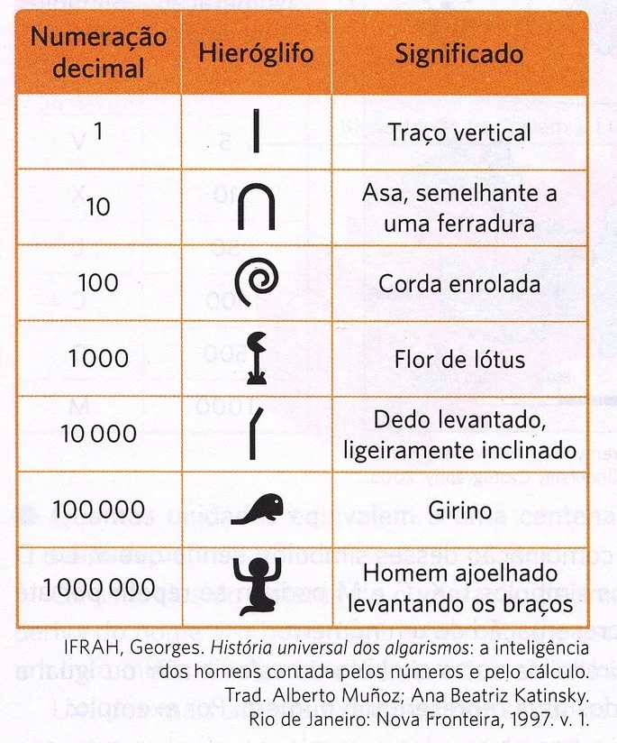
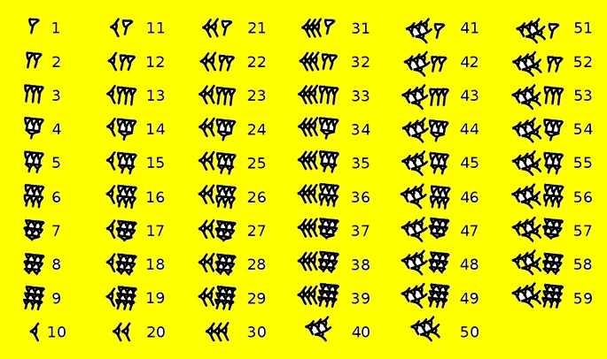
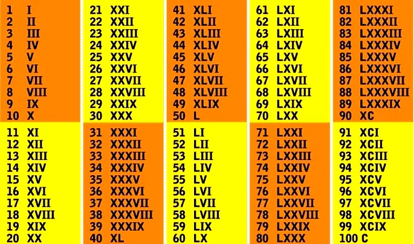

História da Matemática
Como surgiu a matemática?
A matemática surge a partir da relação do ser humano com a natureza.
Na pré-história, o homem primitivo necessitava medir a distância entre fontes de água ou para saber se seria capaz de capturar um animal, etc.
Posteriormente, a partir do momento em que se tornou sedentário, precisou saber a quantidade de alimentos que necessitaria para comer. Também deveria entender como e quando ocorriam as estações do ano, pois isso significava saber em que época deveriam plantar e colher.
Desta forma percebemos que a matemática nasce com a própria humanidade.
Origem da Matemática
No mundo ocidental, a Matemática tem sua origem no Antigo Egito e no Império Babilônico, por volta de 3500 a.C.
Ambos os impérios desenvolveram um sistema de contagem e medição a fim de poder cobrar impostos dos seus súditos, organizar o plantio e a colheita, construir edificações, entre outras funções.
Outros povos americanos, como os incas e astecas, também criaram um sistema de contagem sofisticado com os mesmos objetivos.
Matemática no Antigo Egito
A história do Egito está intimamente ligada com o rio Nilo, pois o povo egípcio precisava aproveitar as vantagens das suas cheias.
Assim, é ali que se desenvolveram modelos para determinar o tamanho das terras. Para isso, eles usaram partes do corpo humano para estabelecer medidas como os pés, o antebraço e o braço.
Igualmente, elaboraram uma escrita onde cada símbolo correspondia 10 ou a múltiplos de 10. Importante lembrar que este sistema corresponde aos dez dedos que temos nas mãos.
Observe abaixo o sistema de numeração egípcia:

Os egípcios empregaram a matemática para observar os astros e criar o calendário que usamos no mundo ocidental.
A partir do movimento do Sol e da Terra, eles distribuíram os dias em doze meses ou 365 dias. Igualmente, estabeleceram que um dia tem duração aproximada de vinte e quatro horas.
Matemática no Império Babilônico
A formação da matemática na Babilônia está ligada à necessidade controlar os impostos arrecadados.
Os babilônicos não utilizaram o sistema decimal, pois não usavam apenas os dedos das mãos para contar. Eles se serviam das falanges da mão direita e continuavam a contagem na mão esquerda, e assim contabilizavam até 60.
Este sistema é chamado sexagenal e é a origem da divisão das horas e dos minutos em 60 partes. Até hoje, dividimos um minuto por 60 segundos e uma hora, por 60 minutos.
Por sua vez, os babilônicos criaram um sistema de numeração cuneiforme e o escreviam os símbolos em tábuas de argila.
Veja a tabela abaixo com números babilônicos:

Matemática na Grécia Antiga
A matemática na Grécia Antiga engloba o período do séc. VI a.C. até o séc. V d.C.
Os gregos usaram a matemática tanto para fins práticos como para fins filosóficos. Aliás, um dos requisitos do estudo da filosofia era o conhecimento da matemática, especialmente da geometria.
Eles teorizaram a respeito da natureza dos números, classificando-os em pares e ímpares, primos e compostos, números amigos e números figurados.
Desta maneira, os gregos conseguiram fazer da matemática uma ciência com teoria e princípios. Vários matemáticos gregos criaram conceitos que são ensinados até hoje como o Teorema de Pitágoras ou o Teorema de Tales.
Matemática na Roma Antiga
Os romanos continuaram a aplicar todas as descobertas dos gregos em suas construções, como os aquedutos, na enorme rede de estradas ou no sistema de cobrança de impostos.
Os números romanos eram simbolizados por letras e seu método de multiplicação facilitou o cálculo de cabeça. Atualmente, os números romanos estão presentes nos capítulos de livros e para indicar os séculos.
Veja abaixo os algarismos e sua equivalência escrita em números romanos:

Matemática na Idade Média
Durante o período conhecido como Alta Idade Média, a matemática foi confundida com superstição e não era um campo do saber valorizado pelos estudiosos.
No entanto, isso se modifica a partir do séc. XI. Por isso, longe de ser uma "idade as trevas", neste período os seres humanos continuaram a produzir conhecimento.
Um dos mais destacados matemáticos foi o uzbeque Al-Khowârizmî, que traduziu as obras de matemática dos hindus para a Casa da Sabedoria, em Bagdá. Suas obras popularizaram entre os árabes os números como os escrevemos hoje.
Acredita-se que os comerciantes árabes os apresentaram aos europeus através de suas transações comerciais.
Idade Moderna
Na Idade Moderna, foram estabelecidos os sinais de adição e subtração, expostos no livro "Aritmética Comercial" de João Widman d'Eger, em 1489.
Antes, as somas eram indicadas pela letra "p", da palavra latina "plus". Por outro lado, a subtração era sinalizada pela palavra "minus" e mais tarde, sua abreviação "mus" com um traço em cima.
A matemática acompanhou as mudanças que as ciências passaram no período conhecido como Revolução Científica.
Um dos grandes inventos será a calculadora, realizada pelo francês Blaise Pascal. Além disso, ele escreveu sobre geometria no seu "Tratado do Triângulo Aritmético" e sobre fenômenos físicos teorizados no "Princípio de Pascal", sobre a lei das pressões num líquido.
Igualmente, o francês René Descartes contribuiu para o aprofundamento da geometria e do método científico. Suas reflexões ficaram expostas no livro "Discurso do Método", onde defendia o uso da razão e da comprovação matemática para chegar à conclusões sobre a causa dos fenômenos naturais.
Por sua parte, o inglês Isaac Newton descreveu a lei da gravidade através dos números e da geometria. Suas ideias consagraram o modelo heliocêntrico e até hoje são estudadas como as Leis de Newton.
Matemática da Idade Contemporânea
Com a Revolução Industrial, a matemática se desenvolveu de forma extraordinária.
As indústrias e as universidades se tornaram um vasto campo para o estudo de novos teoremas e invenções de todo tipo.
Na álgebra, os matemáticos se debruçaram no desenvolvimento de resolução de equações, quatérnios, grupos de permutações e grupo abstrato.
Já no século XX, as teorias de Albert Einstein reformularam o que se entendia como Física. Deste modo, os matemáticos viram-se diante de novos desafios para expressar em número as ideias do genial cientista.
A teoria da relatividade supôs uma nova perspectiva sobre a compreensão do espaço, do tempo e mesmo do ser humano.